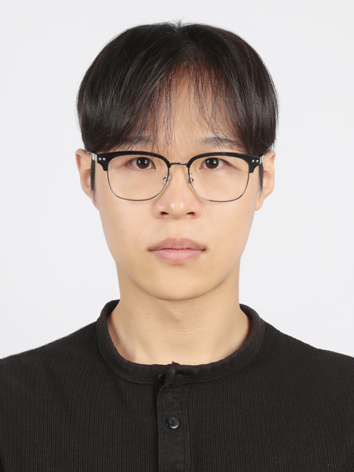

Computer Vision
이미지 인식과 객체 탐지에 관심이 있습니다. ViT, Swin Transformer, DETR의 구조를 공부했습니다.
HUFS · UNDERGRADUATE STUDENT

한국외국어대학교
Social Science AI & 융합학부 · 2학년
CURRENT INTEREST
학부연구생으로 논문을 읽고 발표하고 있습니다. 개인·팀 프로젝트에서는 음성 분류 모델을 구현하고 있습니다.
01 / ABOUT
간단한 소개
AI를 전공하는 학부생입니다.
한국외국어대학교 Social Science AI & 융합학부 2학년 류의태입니다. 2026년부터 AI 공부에 집중하기 시작했고, 같은 해 6월부터 Multimodal Machine Intelligence Lab에서 학부연구생으로 활동하고 있습니다.
Computer Vision과 Vision-Language 모델을 공부하고 있습니다. 음성 분류 프로젝트에서는 전처리와 모델 학습을 진행하고 있으며, AIEYES에서는 스터디 운영과 GitHub 관리를 맡고 있습니다.
02 / INTERESTS
관심 연구 분야
이미지 인식과 객체 탐지에 관심이 있습니다. ViT, Swin Transformer, DETR의 구조를 공부했습니다.
이미지와 언어를 함께 사용하는 모델에 관심이 있습니다. CLIP과 BLIP-2를 공부했습니다.
이미지·음성·텍스트를 함께 다루는 모델에 관심이 있습니다. 관련 논문을 공부하고 음성 분류 프로젝트를 진행하고 있습니다.
03 / JOURNEY
입학 전부터 현재까지
현역, 재수, 삼수로 수능에 응시했습니다.
2021.11.18 · 2022.11.17 · 2023.11.16
강원도 화천의 육군 7사단에 입대했습니다.
한국외국어대학교에 입학하고 군복무로 휴학했습니다.
복학하며 대학 생활을 시작했습니다. 당시에는 전공에 흥미를 느끼지 못했고 진로를 고민했습니다.
AI 공부에 집중하기 시작했습니다. AIEYES 활동에도 참여했습니다.
학업 태도를 계기로 연구실 활동을 제안받아 학부연구생 활동을 시작했습니다.
논문 공부·발표와 개인·팀 프로젝트를 함께 진행하고 있습니다.
04 / RESEARCH
연구실 활동과 논문 공부
CS231n과 Computer Vision·Vision-Language 논문을 공부하고 발표하고 있습니다. 교수님과 정기적으로 미팅하며 공부한 내용을 정리하고 있습니다.
Transformer 기반 모델이 이미지의 특징을 표현하는 구조를 공부했습니다.
Transformer를 이미지 속 객체를 찾는 문제에 활용하는 방식을 살펴봤습니다.
이미지와 언어를 연결하고 함께 활용하는 모델을 공부했습니다.
Computer Vision 모델을 공부한 뒤 CLIP과 BLIP-2를 접하면서, 이미지와 언어를 함께 다루는 모델에 관심을 갖게 됐습니다.
05 / PERSONAL PROJECTS
개인 프로젝트
숫자 음성을 0부터 9까지 분류하기
AudioMNIST를 사용해 숫자 음성을 분류하는 프로젝트입니다. 음성 전처리와 CNN 학습 과정을 익히기 위해 진행했습니다.
화자가 겹치지 않도록 데이터를 나눴습니다. 음성에서 MFCC 특징을 추출하고 CNN으로 분류했습니다.
전처리, 특징 변환, CNN 학습까지 진행했습니다. 학습 손실과 검증 손실을 비교하며 모델의 상태를 살펴봤습니다.
마지막 학습 단계에서 검증 손실이 가장 낮지는 않았습니다. 모델을 선택할 때 학습 손실과 검증 손실을 구분해서 확인하는 이유를 배웠습니다.
모델 선택 · 테스트 평가 · 혼동행렬 · 오분류 음성 확인
06 / TEAM PROJECT
팀 프로젝트
도시 환경의 위험·주의 음향 이벤트 분류
UrbanSound8K의 소리를 위험·주의·일반의 세 범주로 분류하는 3인 팀 프로젝트입니다. 팀 리더로 참여하고 있습니다.
음성 전처리와 Log-Mel 특징을 이용해 CNN으로 분류하는 파이프라인을 구성하고 있습니다.
학습 전 단계까지 진행했습니다. 이후 모델 학습과 평가를 통해 분류 결과를 확인할 예정입니다.
추후 분류 결과를 자연어 알림으로 전달하는 방법도 검토하고 있습니다.
07 / ACTIVITIES
동아리 활동
운영진 · Study Coordinator
AI 스터디 운영과 팀 GitHub 관리를 맡고 있습니다. Git 기초를 설명하고 학습 자료와 코드를 정리하고 있습니다.
08 / RECORDS
자격과 학습 기록
데이터분석 준전문가
프로젝트와 학습 과정에서 작성한 코드를 정리하고 있습니다.
github.com/ryueuitae — 새 창09 / NEXT STEPS
앞으로의 목표
Multimodal AI 연구를 목표로 공부하고 있습니다.
Computer Vision과 Vision-Language 논문 공부를 이어가고, 관련 모델을 직접 구현하고 실험할 계획입니다.
장기적으로는 석사 진학과 AI 연구개발 분야의 진로를 고려하고 있습니다.